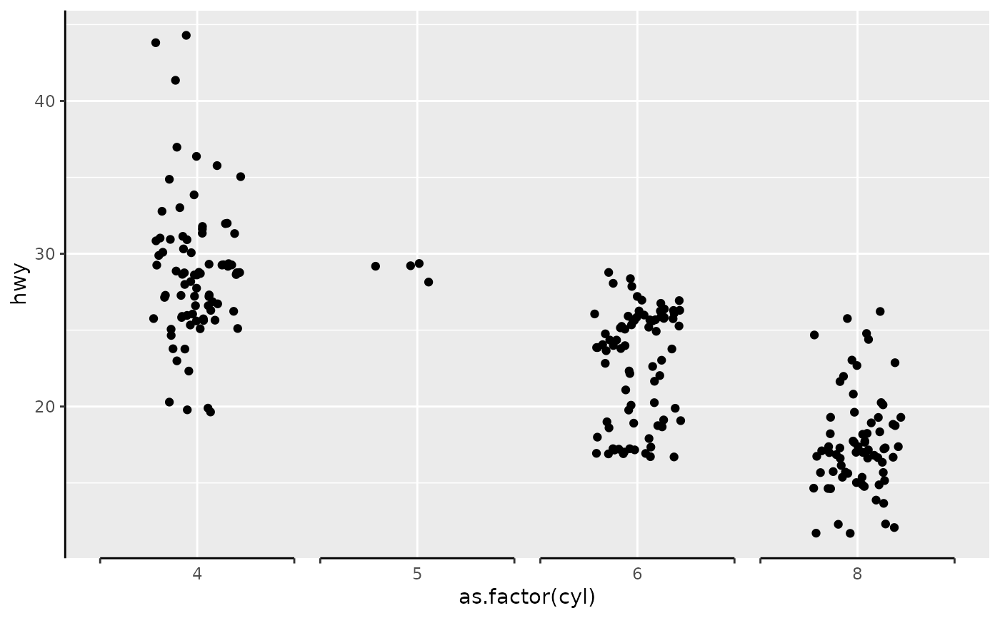
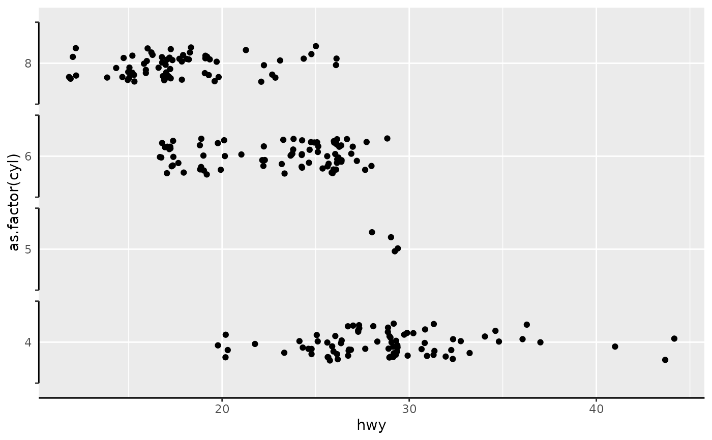
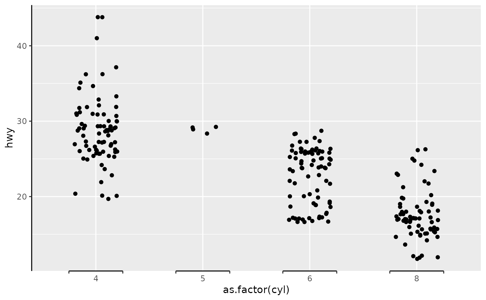
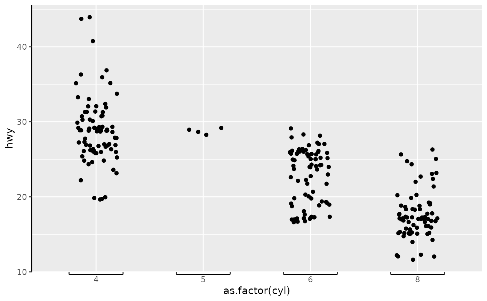
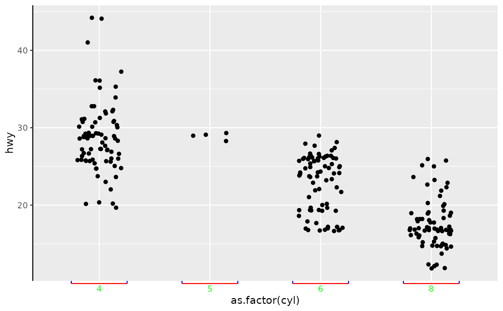

This guide turns the axis into brackets drawn around each axis label.
A character string or expression indicating a title of guide.
If NULL, the title is not shown. By default
(waiver()), the name of the scale object or the name
specified in labs() is used for the title.
silently remove overlapping labels, (recursively) prioritizing the first, last, and middle labels.
Compared to setting the angle in theme() / element_text(),
this also uses some heuristics to automatically pick the hjust and vjust that
you probably want. Can be one of the following:
NULL to take the angles and hjust/vjust directly from the theme.
waiver() to allow reasonable defaults in special cases.
A number representing the text angle in degrees.
The number of rows (for vertical axes) or columns (for horizontal axes) that should be used to render the labels. This is useful for displaying labels that would otherwise overlap.
A positive integer of length 1 that specifies the order of
this guide among multiple guides. This controls in which order guides are
merged if there are multiple guides for the same position. If 0 (default),
the order is determined by a secret algorithm.
Where this guide should be drawn: one of top, bottom, left, or right.
numeric. Controls the width of the bracket. Try
values between 0 and 1.
logical. Default is TRUE and brackets point
outwards. If FALSE the bracket crossbar is moved so the ticks appear
to point inwards towards the plotting area.
Returns a prism_bracket guide class object.
The number of brackets can be adjusted using the breaks
argument in scale_(x|y)_continuous() or scale_(x|y)_discrete().
library(ggplot2)
## base plot
base <- ggplot(mpg, aes(x = as.factor(cyl), y = hwy)) +
geom_jitter(width = 0.2) +
theme(axis.line = element_line(colour = "black"))
## use brackets on x axis
# if not specified, the width of the brackets is guessed
base + scale_x_discrete(guide = "prism_bracket")
# you can add brackets using the guide function as well
base + guides(x = "prism_bracket")

## works with coord_flip
base + scale_x_discrete(guide = "prism_bracket") +
coord_flip()

## adjust bracket width
base + scale_x_discrete(guide = guide_prism_bracket(width = 0.12))

## make brackets point inward
base + scale_x_discrete(guide = guide_prism_bracket(width = 0.12, outside = FALSE))

## change colour with the usual axis.line, axis.ticks, axis.text elements
base + scale_x_discrete(guide = guide_prism_bracket(width = 0.12, outside = FALSE)) +
theme(axis.line.x = element_line(colour = "red"),
axis.ticks.x = element_line(colour = "blue"),
axis.text.x = element_text(colour = "green"))
